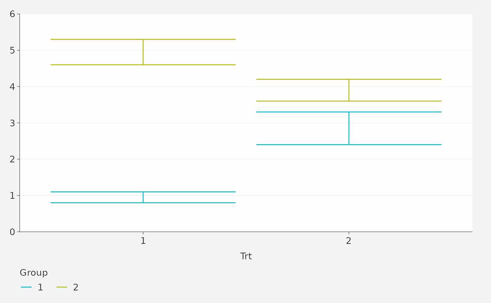
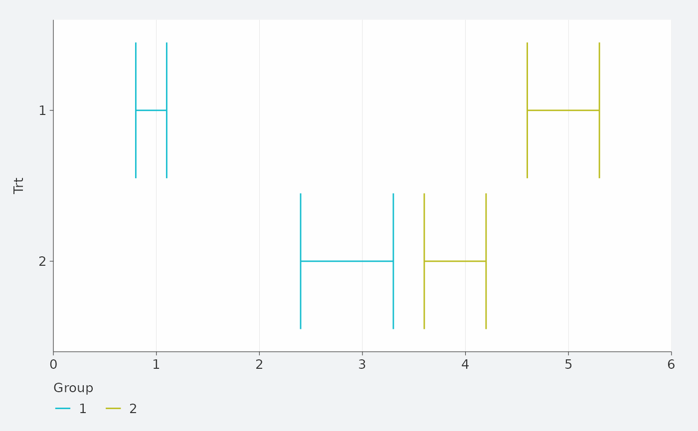
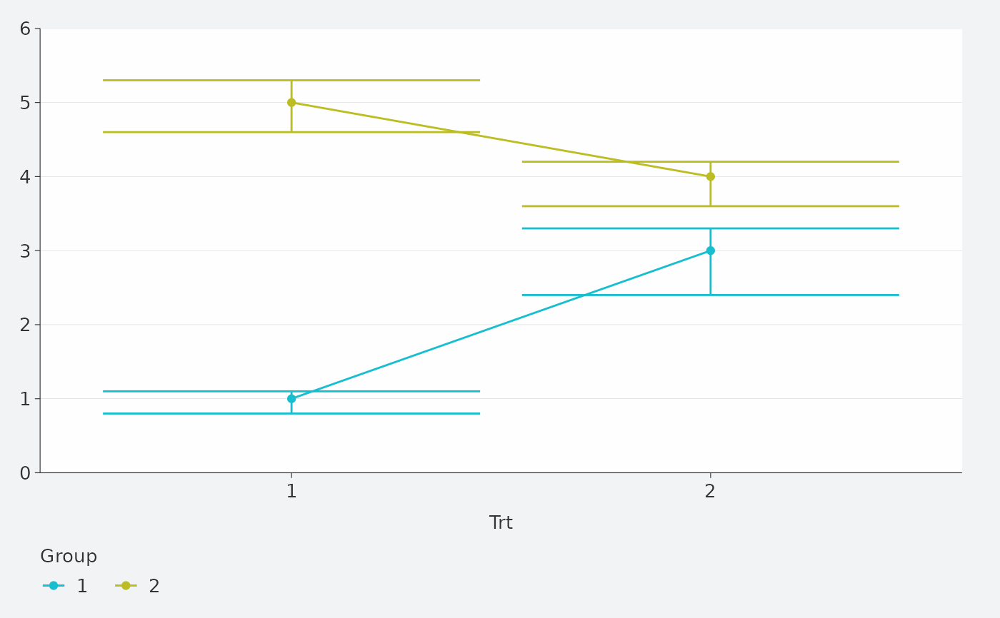
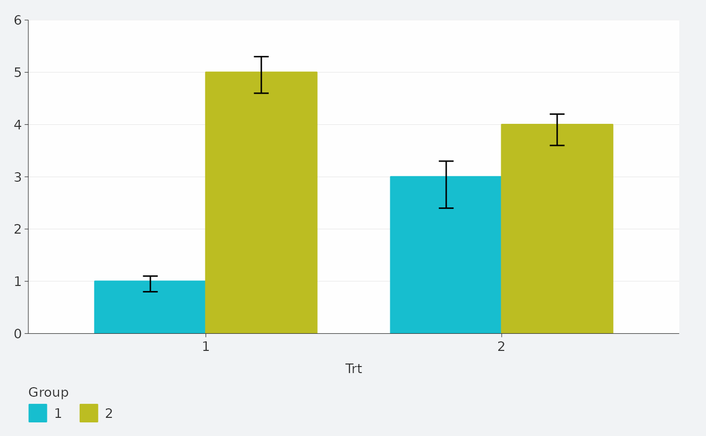

Create a errorbar ggplot with a wrapper around the ggplot2::geom_errorbar function.
Usage
gg_errorbar(
data = NULL,
x = NULL,
xmin = NULL,
xmax = NULL,
y = NULL,
ymin = NULL,
ymax = NULL,
col = NULL,
facet = NULL,
facet2 = NULL,
group = NULL,
stat = "identity",
position = "identity",
clip = "on",
pal = NULL,
pal_na = "#7F7F7F",
alpha = 1,
...,
title = NULL,
subtitle = NULL,
x_breaks = NULL,
x_expand = NULL,
x_grid = NULL,
x_include = NULL,
x_labels = NULL,
x_limits = NULL,
x_sec_axis = ggplot2::waiver(),
x_title = NULL,
x_trans = "identity",
y_breaks = NULL,
y_expand = NULL,
y_grid = NULL,
y_include = NULL,
y_labels = NULL,
y_limits = NULL,
y_sec_axis = ggplot2::waiver(),
y_title = NULL,
y_trans = "identity",
col_breaks = NULL,
col_continuous = "gradient",
col_include = NULL,
col_labels = NULL,
col_legend_place = NULL,
col_legend_ncol = NULL,
col_legend_nrow = NULL,
col_legend_rev = FALSE,
col_limits = NULL,
col_rescale = NULL,
col_title = NULL,
col_trans = "identity",
facet_labels = NULL,
facet_ncol = NULL,
facet_nrow = NULL,
facet_scales = "fixed",
facet_space = "fixed",
facet_layout = NULL,
caption = NULL,
titles = snakecase::to_sentence_case,
theme = gg_theme()
)Arguments
- data
A data frame or tibble.
- x
Unquoted x aesthetic variable.
- xmin
Unquoted xmin aesthetic variable.
- xmax
Unquoted xmax aesthetic variable.
- y
Unquoted y aesthetic variable.
- ymin
Unquoted ymin aesthetic variable.
- ymax
Unquoted ymax aesthetic variable.
- col
Unquoted col and fill aesthetic variable.
- facet
Unquoted facet aesthetic variable.
- facet2
Unquoted second facet variable.
- group
Unquoted group aesthetic variable.
- stat
Statistical transformation. A character string (e.g. "identity").
- position
Position adjustment. Either a character string (e.g."identity"), or a function (e.g. ggplot2::position_identity()).
- clip
Whether to clip geometries outside of the panel. Either "on" or "off".
- pal
Colours to use. A character vector of hex codes (or names).
- pal_na
Colour to use for NA values. A character vector of a hex code (or name).
- alpha
Opacity. A number between 0 and 1.
- ...
Other arguments passed to the ggplot2::geom_errorbar function.
- title
Title string.
- subtitle
Subtitle string.
- x_breaks
A function on the limits (e.g. scales::breaks_pretty()), or a vector of breaks.
- x_expand
Padding to the limits with the ggplot2::expansion function, or a vector of length 2 (e.g. c(0, 0)).
- x_grid
TRUE or FALSE for vertical x gridlines. NULL guesses based on the classes of the x and y.
- x_include
For a numeric or date variable, any values that the scale should include (e.g. 0).
- x_labels
A function that takes the breaks as inputs (e.g. scales::label_comma()), or a vector of labels.
- x_limits
A vector of length 2 to determine the limits of the axis (and the zoom via the coord).
- x_sec_axis
A secondary axis using the ggplot2::sec_axis or ggplot2::dup_axis function.
- x_title
Axis title string. Defaults to converting to sentence case with spaces. Use "" for no title.
- x_trans
For a numeric variable, a transformation object (e.g. "log10", "sqrt" or "reverse").
- y_breaks
A function on the limits (e.g. scales::breaks_pretty()), or a vector of breaks.
- y_expand
Padding to the limits with the ggplot2::expansion function, or a vector of length 2 (e.g. c(0, 0)).
- y_grid
TRUE or FALSE of horizontal y gridlines. NULL guesses based on the classes of the x and y.
- y_include
For a numeric or date variable, any values that the scale should include (e.g. 0).
- y_labels
A function that takes the breaks as inputs (e.g. scales::label_comma()), or a vector of labels.
- y_limits
A vector of length 2 to determine the limits of the axis (and the zoom via the coord).
- y_sec_axis
A secondary axis using the ggplot2::sec_axis or ggplot2::dup_axis function.
- y_title
Axis title string. Defaults to converting to sentence case with spaces. Use "" for no title.
- y_trans
For a numeric variable, a transformation object (e.g. "log10", "sqrt" or "reverse").
- col_breaks
A function on the limits (e.g. scales::breaks_pretty()), or a vector of breaks.
- col_continuous
Type of colouring for a continuous variable. Either "gradient" or "steps". Defaults to "steps" - or just the first letter of these e.g. "g".
- col_include
For a numeric or date variable, any values that the scale should include (e.g. 0).
- col_labels
A function that takes the breaks as inputs (e.g. scales::label_comma()), or a vector of labels. Note this does not affect where col_intervals is not NULL.
- col_legend_place
The place for the legend. Either "bottom", "right", "top" or "left" - or just the first letter of these e.g. "b".
- col_legend_ncol
The number of columns for the legend elements.
- col_legend_nrow
The number of rows for the legend elements.
- col_legend_rev
Reverse the elements of the legend. Defaults to FALSE.
- col_limits
A vector to determine the limits of the colour scale.
- col_rescale
For a continuous col variable, a vector to rescale the pal non-linearly.
- col_title
Legend title string. Defaults to converting to sentence case with spaces. Use "" for no title.
- col_trans
For a numeric variable, a transformation object (e.g. "log10", "sqrt" or "reverse").
- facet_labels
A function that takes the breaks as inputs (e.g. scales::label_comma()), or a named vector of labels (e.g. c("value" = "label", ...)).
- facet_ncol
The number of columns of facets. Only applies to a facet layout of "wrap".
- facet_nrow
The number of rows of facets. Only applies to a facet layout of "wrap".
- facet_scales
Whether facet scales should be "fixed" across facets, "free" in both directions, or free in just one direction (i.e. "free_x" or "free_y"). Defaults to "fixed".
- facet_space
Whether facet space should be "fixed" across facets, "free" to be proportional in both directions, or free to be proportional in just one direction (i.e. "free_x" or "free_y"). Defaults to "fixed". Only applies where the facet layout is "grid" and facet scales are not "fixed".
- facet_layout
Whether the layout is to be "wrap" or "grid". If NULL and a single facet (or facet2) argument is provided, then defaults to "wrap". If NULL and both facet and facet2 arguments are provided, defaults to "grid".
- caption
Caption title string.
- titles
A function to format the x, y and col titles. Defaults to snakecase::to_sentence_case.
- theme
A ggplot2 theme.
Examples
library(ggplot2)
df <- data.frame(
trt = factor(c(1, 1, 2, 2)),
resp = c(1, 5, 3, 4),
group = factor(c(1, 2, 1, 2)),
upper = c(1.1, 5.3, 3.3, 4.2),
lower = c(0.8, 4.6, 2.4, 3.6)
)
gg_errorbar(df, x = trt, ymin = lower, ymax = upper, col = group)

gg_errorbar(df, y = trt, xmin = lower, xmax = upper, col = group)

gg_errorbar(df, x = trt, y = resp, ymin = lower, ymax = upper, col = group) +
geom_line(aes(group = group)) +
geom_point()

dodger <- position_dodge(width = 0.75)
gg_blank(df, x = trt, y = resp, ymin = lower, ymax = upper, col = group) +
geom_col(position = dodger, width = 0.75) +
geom_errorbar(aes(x = trt, ymin = lower, ymax = upper, group = group),
inherit.aes = FALSE,
position = dodger,
width = 0.1)
